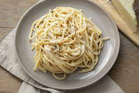

Spaghetti Caccio e Pepe

This is a recipe that we have made in our family for many years--everyone loves it. It's a very basic and easy variation on mac 'n cheese
Ingredients
- Spaghetti
- Olive Oil
- Minced Garlic
- Black Pepper
- Pecorino Romano Chese
Steps
- Boil water
- Cook spaghetti
- heat skillet and add garlic and pepper
- add shaphetti